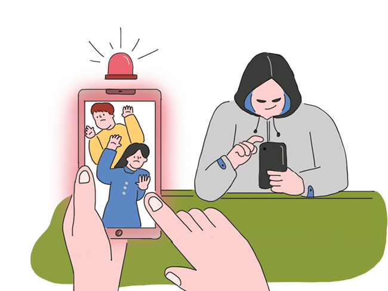

자료 읽기학교에서 일어나는 디지털 성범죄

최근 5년 동안 초·중·고등학교에서 발생한 디지털 성범죄가 1,860건에 이른 것으로 나타났다.
이 중 가장 많이 발생한 범죄는 불법 촬영이었다. 중학생 ◯◯는 친한 친구들이 모여 있는
단체 대화방에 옆 반 학생의 신체 사진을 찍어 올렸다.
같은 대화방에 있던 친구가 “왜 남의 사진을 이렇게 찍어 올리냐?”라고 묻자,
◯◯는 “웃겨서 올린 건데 왜 시비냐!”라고 말했다. 중학생 △△△ 는 친구의 얼굴을 나체 사진에
합성하여 개인 휴대 전화에 소장하고 있다가 같은 반 친구에게 들켰다.
두 학생은 이것이 범죄라고 생각하지 못했고, 친구들 사이에서 흔히 할 수 있는 장난이라 생각했기 때문에,
이러한 행동을 저질렀다고 털어놓았다.
- 『한겨례신문』, 2021. 12. 30.
● 디지털 성범죄로부터 자유로운 학교를 만들기 위해 필요한 자세는 무엇일까?
친구의 동의 없이 신체 사진을 찍거나, 친구의 얼굴을 멋대로 합성하는 일, 또한 그러한 사진을 유포하는 행위 등이 디지털 성범죄에 해당한다는 사실을 깨달아야 한다.